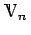

Inhalt Index DeskTop Bronstein

 Algebra und Diskrete Mathematik Klassische algebraische Strukturen Darstellung von Gruppen Spezielle Darstellungen
Algebra und Diskrete Mathematik Klassische algebraische Strukturen Darstellung von Gruppen Spezielle Darstellungen


Zwei Darstellungen D(G) und D'(G) nennt man äquivalent, wenn für jedes Gruppenelement a die Darstellungsmatrizen durch die gleiche Ähnlichkeitstransformation mit der nichtsingulären Matrix  auseinander hervorgehen:
auseinander hervorgehen:
Im entgegengesetzten Falle spricht man von einer inäquivalenten Darstellung. Der Übergang von D(G) nach D'(G) entspricht einer Basistransformation im Darstellungsraum :
Jede Darstellung einer endlichen Gruppe ist einer unitären Darstellung äquivalent.